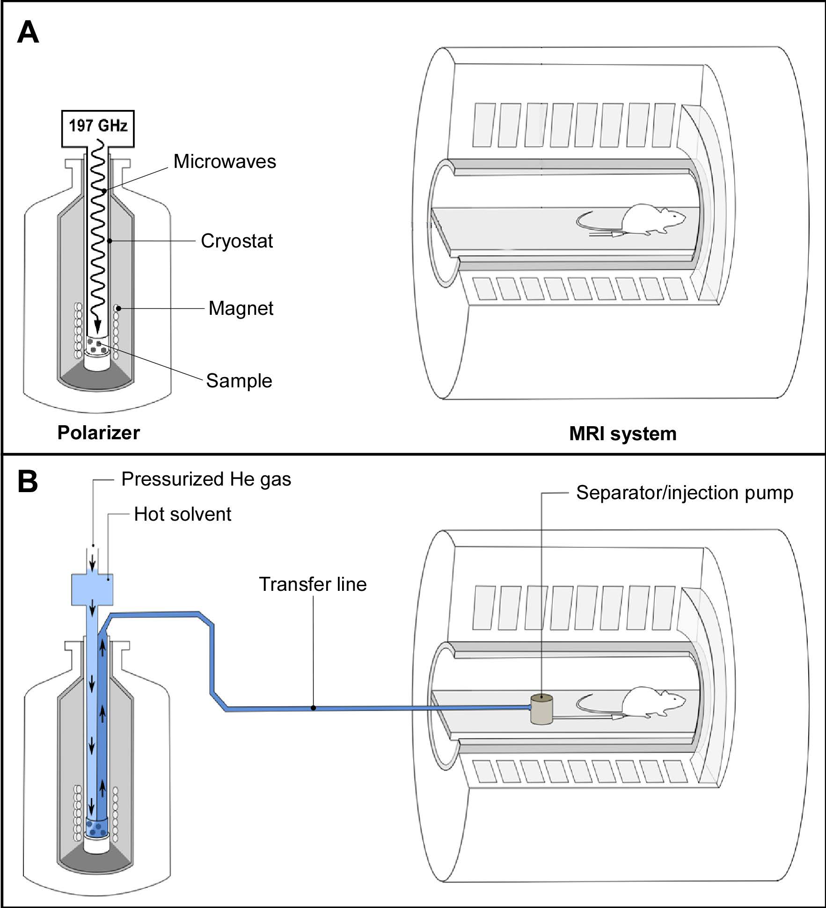
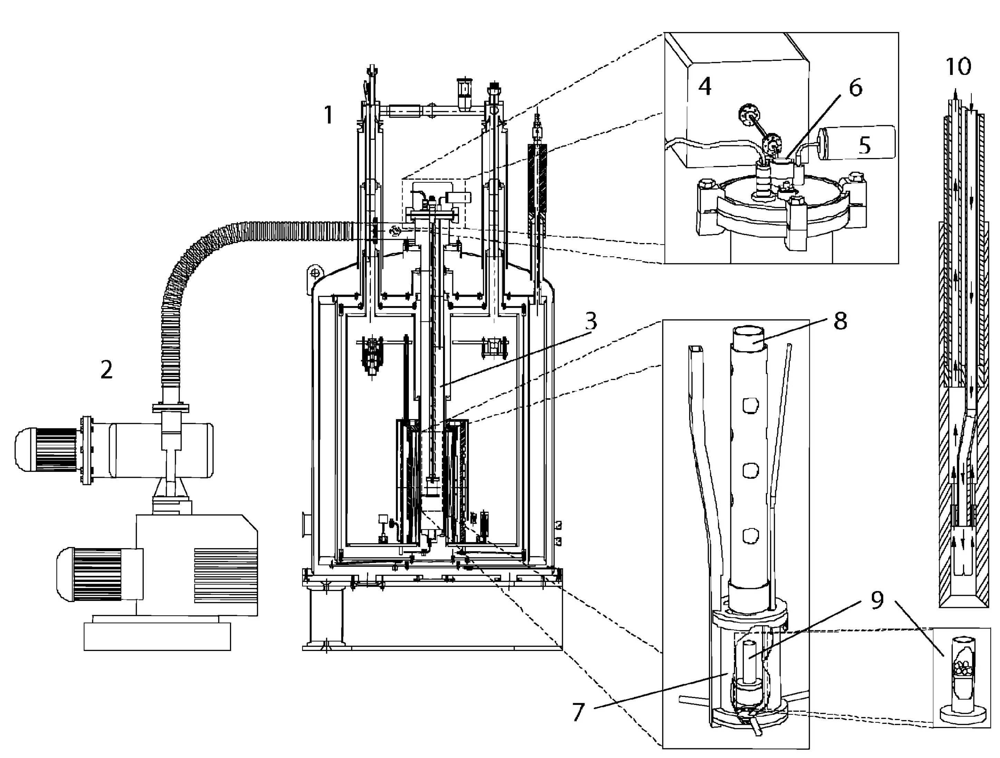
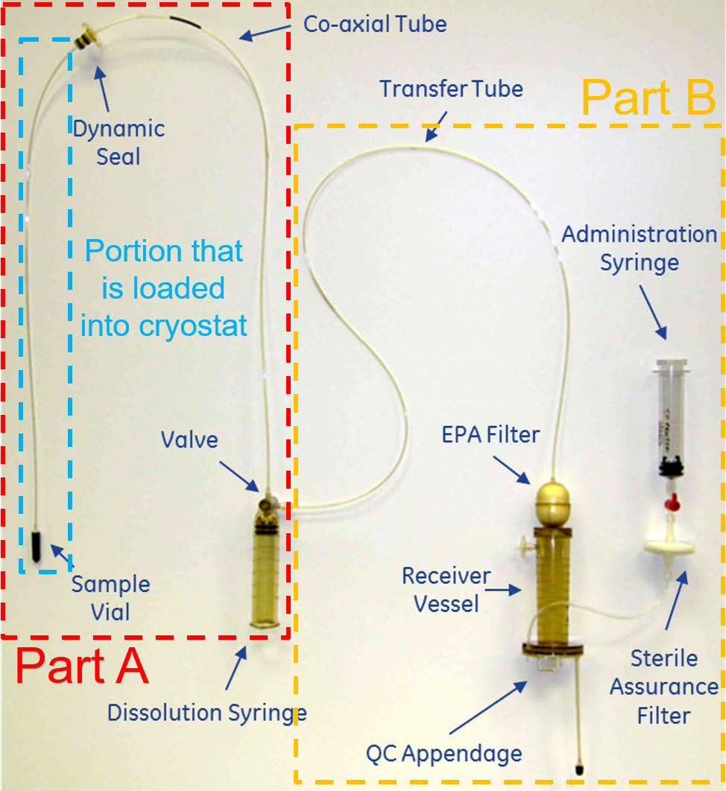
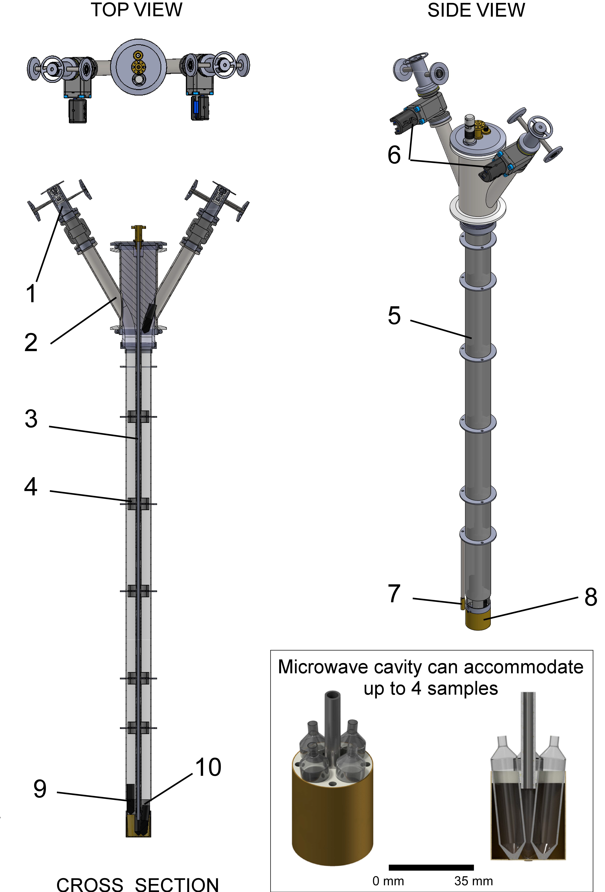
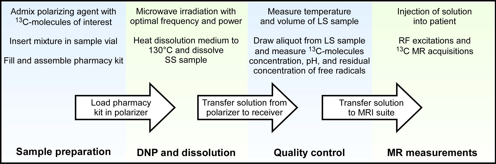

Hardware for preparing HP 13C-Molecules: From Polarizer to Patient#
Adam P. Gaunt1 and Arnaud Comment 1,2
1Cancer Research UK Cambridge Institute, University of Cambridge, Cambridge, UK
2General Electric Healthcare, Chalfont St Giles, UK
Abstract: This chapter outlines the physical requirements for producing biocompatible solutions with highly polarized 13C-molecules, along with the necessary procedures required to conduct a successful HP 13C MR experiment. A selection of polarizers presented in the literature are described and the typical operating conditions they are expected to provide, such as base temperature and field strength, are outlined and the merits of these systems are discussed. The dissolution process, conducted to execute a rapid state change of the sample containing the polarized 13C-molecules, is explained in detail for several notable systems, including polarizers designed for clinical and preclinical applications. Clinical experiments require a sterile sample to ensure that dissolution dynamic nuclear polarization (DNP) is safe for humans and the fluid path assembly used to guarantee the sample is uncontaminated is presented, along with an explanation of the checks and procedures required post dissolution before injection. The steps involved in a HP 13C MR experimental strategy are subdivided and presented as a workflow. The chapter is concluded with a summary of potential future developments and the current challenges to be overcome regarding DNP hardware. This includes the use of non-persistent photo-generated radicals, which may allow 13C polarization storage and transport, along with simplification of the quality control associated with clinical experiments.
Key Words: dynamic nuclear polarization, hyperpolarization, hyperpolarizer, cryostat, cryogen-free, dissolution.
Requirements for DNP#
The aim of dissolution DNP (dDNP) is to supply aqueous solutions containing HP 13C-molecules that can be utilized in NMR and MRI experiments to probe biological processes that would be otherwise undetectable without the vast signal enhancement provided by DNP. As shown in Figure 1, such HP 13C-molecules are prepared ex situ (i.e. outside of the NMR or MRI system) in an apparatus known as a “polarizer”. A complete HP 13C MR experiment involves several key steps, namely polarization of selected 13C-molecules, dissolution, transfer/injection of the dissolved HP 13C-molecules, and finally MR measurements. Initially the focus of this section will be on the hardware used to perform DNP as accessing high levels of liquid-state (LS) 13C polarization requires effective solid-state (SS) DNP. In order to achieve efficient polarization through DNP, the polarizer must meet three main requirements: (1) The SS sample containing the 13C-molecules must be situated in a high magnetic field, (2) it must be kept at low cryogenic temperature, and (3) there has to be a path by which to deliver microwaves to the sample. This is fundamental to DNP since increasing the magnetic field and reducing temperature increases spin polarization thanks to the Zeeman splitting and the Boltzmann distribution. For more information, see Physics of dDNP.

Figure 1: Preclinical setup to perform HP 13C MR experiments. (A, top panel) Once the sample is prepared and inserted into the polarizer, it is irradiated with microwaves; (B, bottom panel) Dissolution is carried out inside the magnetic field of the polarizer and the solution is rapidly transferred to the magnetic field of the measurement MR system. The HP 13C-molecules are collected in the non-magnetic separator/injection pump from where it is administrated and HP 13C MR measurements are started.
Polarizers typically operate in the temperature range of 0.8 to 1.5 K with a magnetic field between 3 and 7 T, conditions at which the electron spin polarization is essentially unity (i.e. 100% polarization). It is possibly intuitive to suggest that lower temperatures and higher fields should be accessed in order to improve the polarization even further. However, this would require a substantial increase in technical complication with diminishing returns as the polarization build-up time becomes unworkably longer as the temperature is lowered and the field is increased. The stated ranges therefore provide an approximately optimal platform to produce polarized 13C-molecules on a practical timescale (typically between 45 and 180 minutes) for dDNP.
The Magnet#
Thanks to the recent advances in superconducting magnet technology, two options are available for reaching the field strengths required for DNP. The first is a “wet” magnet immersed in a liquid helium bath. This type of magnet was employed in the early polarizers that operate at 3.35 T, although recently becoming much less popular due to the requirement for regular input of liquid helium which is a significant expense due to its ever increasing scarcity. The other option is a “dry” magnet cooled through strong thermal conduction to a cooling plate which itself is actively cooled by a cryocooler. Such magnets have the advantage of not requiring any cryogenic bath to maintain superconducting properties. Instead, the cryocooler consumes only electricity, the cost of which is orders of magnitude lower than that of liquid helium. Dry magnets have been implemented in polarizers operating up to 10.1 T (1).
The optimum polarizing field is still subject to debate with many of the implemented polarizers operating at various fields (1-7). For some time, 3.34 T was believed to be the optimum field, possibly because it was thought that increasingly large microwave powers had to be delivered to the sample at higher frequency to drive the polarization transfer from the electron spins of the free radicals to the nuclear spins. However, following the work of Jannin et al. (4) and Jóhanneson et al. (5), it became clear that increasing the field to 4.6 or 5 T yields larger 13C polarization. It has since been shown that even larger polarization can be obtained at 7 T for a set temperature (3,8). A trade-off for higher polarization is that as the magnetic field increases, the build-up time is extended because of lengthening relaxation times of the electron and nuclear spins involved in DNP. Therefore, the benefits of increasing the field beyond 7 T is outweighed by the negative effect on the length of time required to polarize a single sample (1,9).
Cryogenic Environment#
To maintain a low sample temperature during the DNP process, the sample space of the polarizer is filled with liquid helium cooled below the lambda point (superfluid helium) by either directly pumping on it or by thermally linking it to a cold plate. In the first case, high-flow mechanical vacuum pumps are simply connected to the output port of the polarizer cryostat and the temperature of the sample bath is lowered by reducing the vapor pressure above the liquid. All early polarizer designs were based on this straightforward technology. An important point to keep in mind is that about 40% of the initial amount of liquid helium will be lost through the phase transition going from normal 4He to superfluid 4He and that the level of the bath will then slowly decrease unless it is compensated by the continuous feed of an external source of liquid helium, typically regulated using a needle valve.
The alternative option of conductively cooling the sample space was first proposed in the design of a polarizer for sterile intent (10). This approach based on the use of a so-called “1-K pot” that cools the sample space through a cold plate has the advantage of maintaining the helium bath level in the sample space at a constant level, providing a very stable sample space temperature. It also has the advantage that the cooling circuit associated with the 1-K pot, which is usually coupled to a cryocooler, can be a closed loop system for which no external input of liquid cryogens is required since this circuit does not have to be opened (and pressurized to atmospheric pressure) to load or unload samples. The polarizer for sterile use employs a powerful sorption pump filled with charcoal that can very efficiently trap helium gas and therefore decrease the temperature of the 1-K pot down to 0.8 K. The trapped helium gas can be extracted from the charcoal and recondensed into the 1-K pot while the system is not in use, typically during the night. A similar closed-loop approach was proposed for the design of a preclinical polarizer, where the sorption pump was replaced by a mechanical pump, although this system has a higher base temperature of 1.3-1.4 K (1,2). The output helium gas of the pump is recondensed and then fed into the 1-K pot via a needle valve. More recently, a closed loop 4He system, including a flow restriction with a fixed impedance feeding the 1-K pot, has been proposed as preclinical polarizer (9). This particular system is attractive as it does not require any mechanical adjustment such as the rotation of a needle valve and it can run for indefinite periods of time at its base temperature. Although it could be possible to run such a closed system with 3He to further reduce the temperature, the current price of this rare isotope is too exorbitant to even consider this option. The build-up time could also become prohibitively long at temperatures below 0.8 K.
Microwaves#
To drive the DNP process, the SS sample needs to be irradiated with microwaves at a frequency near to the electron Larmor frequency which are delivered to the sample from an external source via a waveguide. It is usual to contain the microwaves inside a (non-resonant) cavity at the sample space as confining the microwaves in this way increases the power density that the sample is subject to. The 13C polarization depends, to some extent, upon the power provided and it will increase with increasing power until it reaches a plateau beyond which additional power will eventually be detrimental to the polarization because of heating effects. In a typical design, a microwave source capable of producing 50 mW at the source output is usually sufficient.
The optimum microwave frequency and power is determined by monitoring the SS 13C NMR signal under DNP conditions. In order to determine the correct polarizing frequency a “microwave frequency sweep” is carried out where the sample is irradiated at varying frequencies and the magnitude of the SS 13C NMR signal is plotted as a function of the microwave frequency. Power is optimized though polarization build-up experiments at varying microwave powers. The build-up is monitored by applying evenly spaced, small flip-angle radiofrequency (RF) pulses while irradiating with microwaves and measuring the increase in SS 13C NMR signal intensity that arises due to the build-up of the polarization. By repeating this across a range of microwave frequencies the most efficient microwave power is found.
The Sample#
Although not strictly hardware, the preparation of the sample has a considerable bearing on the quality of the DNP. A typical sample consists of a solution containing the 13C-molecules of interest, a free radical compound, also called “polarizing agent”, and potentially a glassing agent. The polarizing agent provides a source of electron spins that act as the sink of polarization to be transferred to the 13C on the labelled molecules, as described in Physics of dDNP. However, if the solution forms a crystalline structure during freezing, the distribution of the polarizing agents leads to unfavorable DNP conditions and poor signal enhancement. In order to ensure that there is a homogeneous distribution of randomly oriented free radical compounds, an amorphous solid is desired which is ensured by the addition of a glassing agent (such as glycerol or DMSO) and flash freezing in liquid nitrogen. This is not required for the most widely used 13C-molecule, pyruvic acid, since it is “self-glassing”. It may be beneficial to pre-freeze beads of the sample in liquid nitrogen before loading so as to ensure that a good glass is formed. By freezing droplets of the solution (see Figure 1), the surface area of the sample exposed to the dissolution solvent is increased, making the rapid melting more efficient. For more details see HP Agents and Biochemical Interactions.
Monitoring of solid-state 13C polarization#
Monitoring the build-up of the SS 13C NMR signal is not only important to optimize the frequency and power of the microwave irradiation required for DNP, but also to confirm that the sample is of good quality (amorphous with an acceptable concentration of free radicals). Integrating a SS 13C NMR probe within the cryogenic environment of the polarizer can be challenging because it must be compatible with the dissolution setup without being detrimental to the DNP process. If the probe is sensitive enough, it can be used to estimate the SS 13C polarization attained through DNP inside the polarizer by comparing the thermal equilibrium 13C NMR signal with the 13C NMR signal after DNP.
The hardware implemented for monitoring the SS 13C polarization varies between polarizer designs. The probe usually consists of a saddle coil placed within the sample space. The geometry of this type of coil provides a RF field orthogonal to its cylindrical axis and can therefore be aligned with the polarizer axis, allowing samples to be moved in and out of the coil. To obtain a resonant circuit at the 13C Larmor frequency, lumped tuning and matching elements are placed in between the coil and the NMR spectrometer. These elements are typically placed outside of the cryogenic environment of the polarizer so that they can be easily adjusted. The length of the coaxial cable connecting the coil to the remote tune and match elements has to be an integer number of half the 13C Larmor frequency. Such simple resonant circuit has an inherent poor sensitivity due to the large losses in the coaxial line separating the tune and match elements from the coil. To improve the sensitivity of the probe, fixed capacitors can be placed next to the coil to obtain a roughly tuned and match circuit inside the cryogenic environment of the polarizer, and to add a pair of room-temperature variable capacitors at the other end of the cable to fine-tune and -match the coil (11). The drawback of this solution is that this resonant circuit can have a very narrow frequency band and the fixed capacitors have to be carefully chosen, taking into account that the capacitance of these elements changes at low temperatures.
Rapid state change#
Although, to be efficient, DNP requires operating at low temperatures, for biological applications the 13C-molecules must undergo a state change, from SS to LS, involving a rapid temperature increase. The requirement for the presence of free radicals in fairly high concentration (typically 10-100 mM) in the SS sample means that it cannot simply be extracted from the high-field environment of the polarizer following DNP as this will cause the enhanced polarization to be lost. This is due to the shortened T1 of the 13C spins at low field, outside of the polarizer environment, caused by the presence of the free radicals. This is the reason why Ardenkjær‐Larsen et al. developed dDNP (12), a method by which the sample is dissolved (and therefore melted) inside the polarizer using superheated water, whereupon it is easily flushed out of the polarizer and can be transferred to the measurement NMR or MRI system for injection. Thanks to the high dilution (20-100 fold) of the free radicals as well as the molecular tumbling exhibited in the LS, the interactions that cause the rapid decay in polarization inside the SS sample are strongly reduced.
The way in which this dissolution process takes place varies depending on whether the polarizer is operating a pumped helium bath or a closed-cycle cryogenic system. The main difficulty in implementing a polarizer compatible with dDNP is the vast heat load applied to the cryogenic system through the significant volume of superheated solvent required to melt and extract the HP 13C-molecules. The principle components required to carry out a dissolution are a high-pressure boiler to allow water to be heated to around 130-150 degrees C, a path to allow the water to flow to the sample, and a path to allow the dissolved HP 13C-molecules to be extracted from the polarizer. The extraction procedure can be driven by high-pressure helium gas to flush the full solution out of the system. The paths guiding the liquids may be physically fixed to the vial containing the sample throughout the DNP process, or they may be introduced momentarily to mate with a sample cup just prior to the dissolution.
Preclinical dDNP#
The original dDNP system developed in 2003 by Wolber et al. operates at 3.35 T and includes a variable temperature insert (VTI) drawing liquid helium from the magnet vessel into the sample space through a needle valve (7). The temperature of the sample space is lowered to about 1.2 K by actively pumping on the VTI. A fiberglass tube guides the sample into the microwave cavity and also allows a dissolution apparatus to access the sample space (see Figure 2). A 200 mW, 94 GHz microwave source is positioned above the polarizer and the microwaves are delivered to the non-resonant cavity via a stainless-steel tube. The sample containing 13C-molecules of interest can be inserted as a room-temperature solution or flash-frozen as beads. The sample is placed inside a PTFE or PEEK sample cup that is open at one end. To load the sample into the polarizer, the pressure inside the VTI is raised with hot helium gas to prevent air or moisture from entering. Once the sample is in place, the microwaves are switched on and the 13C polarization build-up is monitored using a remotely tuned saddle coil that is located inside the microwave cavity. Dissolution is enacted via a “dissolution wand” which mates with the open end of the sample cup to form a leak tight seal. The wand has two pathways, one is an input line that is attached to a boiler and the other is an output attached to a waiting collection vessel. The dissolution process sees approximately 5 mL of superheated solvent flushed down the input path from the boiler which dissolves the sample and is then pushed into the collection vessel. This process is carried out under high pressure and, again, the bore of the VTI is pressurized during this time to prevent air inflow. Pressuring the VTI prior to opening the cryostat in order to carry out tasks like sample loading and dissolution increases the heat load on the system which, in a pumped helium bath cryogenic system is compensated for through evaporation of liquid helium. The volume of liquid helium in the sample space must then be replenished, hence depleting the stock in the magnet helium vessel.

Figure 2: Schematic diagram of the original dDNP polarizer showing the magnet [1], vacuum pump [2], variable temperature insert (VTI) [3], microwave source [4], VTI pressure sensor [5], sample loading port [6], microwave container [7], PTFE tube to position the sample cup [8], PTFE sample cup [9] and the dissolution wand [10]. Reproduced with permission from Wolber et al. (7).
A commercially available polarizer produced by Oxford Instruments in 2006, known as the HyperSense™, is built around the same specifications as the original dDNP polarizer with the addition of an increased level of automation to improve reproducibility. Although no longer in production, it is still a stalwart of HP 13C preclinical imaging experiments. Most biological studies, in particular in vivo preclinical experiments, have indeed been performed using either, one of the original polarizers or the HyperSense™. Since the inception of the original polarizer a couple of alternative designs based on the same dDNP technology have been implemented and used for preclinical studies (13,14). In these two other systems, liquid helium is drawn from an external storage vessel rather than from the magnet vessel. However, unlike the original polarizer and the HyperSense™, their liquid helium consumption is high, and this style of polarizer is becoming increasingly costly to maintain due to the high market price of helium.
The recent advent of efficient and cost-effective cryocoolers has provided new opportunities for the development of “cryogen-free” polarizers to move away from the helium thirsty designs. Following the implementation of a polarizer for sterile intent and its commercialization by GE Healthcare under the name SPINlab™, several research groups adopted this system for in vivo preclinical studies. This polarizer is highly automated and its current version operates at 5 T and 0.8 K. The sample space is kept at sub-atmospheric pressure (below 10 mbar) at all time and the samples have to be introduced into a leak-tight assembly prior to be loaded into the system. This assembly is called “fluid path”. The fluid path has many advantages over the open sample cup as it not only allows for the avoidance of pressurizing the sample space (and as such maintaining the liquid helium bath below the lambda point, in the superfluid state) but it also eliminates the need to introduce a dissolution wand into the cryogenic environment, hence reducing the heat load to the system. The introduction of the fluid path results in a much more stable system in which consecutive dissolutions can be performed without the need to refill the sample space with helium. The fluid path used for preclinical study is displayed on the left side (part A) of Figure 3. It consists of a sample vial connected to a dissolution syringe via two coaxial plastic tubes, the inner one directing the flow of solvent from the syringe into the vial. The outcoming solution containing the HP 13C-molecules flows back to the syringe valve through the interstitial space between the outer tube and the inner tube and it is then redirected to an external receiver through a transfer tube. To prevent air from being introduced inside the cryogenic environment when the fluid path is loaded in the polarizer, a dynamic seal is placed around the outer tube. The dynamic seal allows the fluid path to be raised and lowered inside the bore of the cryostat without breaking the vacuum and is actively pumped on to ensure it remains leak free.

Figure 3: Commercial fluid path for preclinical and clinical applications. Part A: components required to insert the sample inside the cryogenic environment of the polarizer and carry out a dissolution; this part is employed for both preclinical and clinical experiments. Part B: components required to filter the polarizing agents, adjust the pH of the sample to physiological value, perform the quality control (QC), and draw the sterile solution into a syringe used for administration to humans. This fluid path is referred to as pharmacy kit in the context of clinical studies. The method of insertion and final sample position is highlighted further in Figure 4.
Although the SPINlab™ can be used for preclinical experiments, it has been designed for clinical studies (see section 2.6 below for more details), and it might be too onerous and costly for some research facilities focusing on cell or small animal studies alone. Two systems tailored for preclinical applications have been recently proposed: the SpinAligner (1), now commercialized by Polarize, a spin-off company from the Danish Technical University, and a system based on a modified commercial closed-cycle 3He/4He dilution refrigerator (9). Both these systems share some common features: a dry magnet, no liquid cryogen required, and the use of fluid paths for sample polarization and dissolution.
In the authors’ opinion, a key feature for in vivo experiments is a multichannel system to be able to polarize more than one sample at a time hence allowing rapid consecutive dissolutions. The two main reasons for wanting such option are that, first, an experiment might fail due to various issues related either to the dDNP process itself, the administration of the dose, or the HP 13C MR acquisition, and second, some biological experiments might require consecutive injections to compare results prior and after a physiological change induced by an operation or the administration of a treatment. Without a multichannel setup, the delay between consecutive dissolution can hardly be set to below 1 h since loading and polarizing a sample requires multiple time-consuming steps. The SPINlab™ is equipped with 4 channels, meaning that up to 4 samples can be polarized in parallel. Note that Batel et al. developed a system that could accommodate up to 6 samples but only one sample can be polarized at a time, tempering the benefit of having multiple samples loaded in the polarizer (13). The large helium consumption of this system also reduces its attractiveness. The polarizer implemented by Cheng et al. is a multichannel cryogen-free system adapted for preclinical studies (9). The sample space of this polarizer, operating at 7 T and 1.35 K, is filled by condensing 65 L helium gas from an external cylinder, yielding about 85 mL of liquid helium. The sample space is also capable of housing up to four different samples, which can be simultaneously polarized, allowing consecutive dissolutions to be carried out with a delay of 10 min or less between them (see Figure 4).

Figure 4: DNP insert developed by Cheng et al. to allow multi-sample DNP in a cryogen-free polarizer. The insert, which fits within the bore of the polarizer and has an integrated microwave guide and container, provides a guide for the fluid paths. For clarity, the tubes of the loaded fluid paths are not shown. During polarization, the sample vials [9] are positioned inside the microwave container (see inset), located at the isocenter of the polarizer magnet. The container is capable of holding up to 4 samples and multiple dissolutions can be carried out on a timescale of several minutes. The insert is made up of [1] an airlock for sample loading, [2] sample access tube, [3] microwave guide, [4] internal sample vial guide baffle, [5] fiberglass tube, [6] gate valve, [7] RuO2 thermometer, [8] microwave container, and [10] a RF coil. Reproduced with permission from Cheng et al. (9).
To date, very few in vivo preclinical applications have been performed with these new cryogen-free preclinical systems and their reliability and ease of use has yet to be confirmed. However, although the preparation of a fluid path is more complex than simply introducing a sample into an open sample cup, the negated need for liquid cryogens makes them much more practical than the original pumped helium bath cryogenic systems.
Post dissolution#
Once the sample has been dissolved and the HP 13C-molecules are in solution, the 13C polarization decays at a rate defined by the LS 13C T1 for the specific molecules of interest. It is therefore vital that the HP 13C-molecules are rapidly transferred into an administration syringe and injected. If the HP 13C-molecules experience strong magnetic field gradients or areas of zero field this can be detrimental to the 13C polarization. To combat this depolarizing effect, it is possible to apply an external field during transfer from the polarizer to the MR system and a handheld electromagnet was developed for this purpose (15). For experiments with 13C-pyruvic acid, this is usually not necessary as its C1 and C2 carbons still have relatively long T1 even at earth magnetic field.
For in vivo preclinical experiments, an injection pump (seen in Figure 2.1) has been designed in order to allow for fast, safe and reproducible injection of the HP 13C-molecules (14). The non-magnetic pump is placed inside the bore of the MR system and allows minimizing the dead volume of the injection line between the administration syringe and the venous catheter, which is especially important in preclinical MRI systems in which the bore diameter is small and long. The pump also allows keeping the delay between dissolution and injection down to 3 s, thanks to a hydraulically driven piston that decouples the high-speed transfer of the HP 13C-molecules into the pump from the physiologically-adapted injection rate required for animal experiments (16). In absence of this, the HP 13C-molecules should be rapidly transferred and injected manually (see HP Experimental Methods: Cells and Animals).
Clinical dDNP#
The first in-human HP 13C MR experiments were performed in the Department of Radiology and Biomedical Imaging of the University of California San Francisco (UCSF) following the intravenous injection of [1-13C]pyruvate that was hyperpolarized using a proof-of-concept DNP polarizer (17). This instrument essentially consisted in the original polarizer described by Wolber et al. (see Figure 2) (7), but was installed inside a clean room to insure that the solution to be injected was sterile. The study confirmed the safety of an injection of a bolus of HP [1-13C]pyruvate at a dose of 0.43 ml/kg, which provides sufficient signal for in-human MR metabolic studies.
Although these experiments were successful, the setup was not viable for larger scale studies because the approach required a dedicated clean room for the polarization of the [1-13C]pyruvate molecules. A sealed fluid path was therefore designed to be able to operate the polarizer in an uncontrolled environment while precluding any compound required for the formulation from being contaminated during the hyperpolarization process in order to obtain sterile, injectable doses of [1-13C]pyruvate (10). This fluid path (or pharmacy kit as it is known) is shown in Figure 4 and consists of the previously described part A of the fluid path coupled to a part B, comprising a filter to remove the free radicals, a receiving vessel with a quality control appendage, and an administration syringe with a sterility assurance filter. The clinical polarizer had to be designed such as to be able to accommodate this fluid path. In fact, as mentioned earlier, it was designed to accommodate and polarize up to 4 samples in parallel while still allowing for individual sample dissolutions.
One of the key features of this polarizer is that the small amount of liquid helium inside the sample space (about 1 dL) is cooled by a large 1-K pot through copper thermal links. Up to 2 L of liquid helium can be condensed inside the 1-K pot which is cooled by a sorption pump. The sample temperature is extremely stable with time since the liquid helium level inside the sample space, and hence the pressure, does not vary with time. It also provides the opportunity to have a zero-boil off system since the helium gas trapped inside the sorption pump can be recondensed into the 1 K pot during the time the system is idle (typically overnight). The typical polarization obtain with this system is 55+/-5%. By increasing the field to 7 T it could be expected to increase by a factor 7/5, i.e. reach 75% (9).
The caveat of using a fluid path is, however, that it can leak and introduce contamination inside the cryogenic system, most notably water during the dissolution process. In this case, the liquid helium inside the sample space will instantly evaporate. It will also be necessary to remove any ice inside the sample space, which is often a tricky procedure since the system remains cold, and then refilling and recondensing of the helium must be carried out before experiments can be resumed.
For the large doses required for humans, the initial sample volume exceeds 1 mL and the dissolution process is therefore fairly lengthy (about 10 s) due to the volume of solvent required to dissolve such a large sample. In addition, since the sample is usually in an acidic form (pure pyruvic acid for the production of sodium pyruvate solution), it takes a non-negligible time to mix the acidic solution to a buffer solution in order to produce an injectable sample with a biologically compatible pH. The final solution has then to be transferred into a syringe for administration to the subject. This fluid handling is the most time-consuming part of the dissolution procedure. In the original quality control (QC) developed for the SPINlab™, the dose is released around 30 s after the dissolution has been initiated. In the best-case scenario, the dose in injected about 1 min after dissolution, which means that about 2/3 of the 13C signal is already lost before the point of measurement since the 13C T1 of [1-13C]pyruvate in a solution with a physiological pH (6.5-8.5) at low field is about 60 s.
Before dissolution is carried out, the patient is catheterized and placed inside the MRI scanner whereupon 1H anatomical scans are conducted. Once the sample is polarized, the superheated dissolution medium is released from the dissolution syringe of the pharmacy kit and directed into the sample vial to dissolve the sample. The resulting acidic solution runs through a filter that collects most of the precipitated polarizing agent prior to being neutralized and buffered to physiological pH by mixing with the neutralization medium contained in the receiver vessel of the pharmacy kit.
Quality Control (QC)#
Following dissolution, filtration, and neutralization, several parameters are checked prior to injection: temperature, volume, pH, pyruvate concentration, residual polarizing agent concentration, and optionally 13C polarization level. The exact accepted range depends on the release criteria of the local regulatory authorities and qualified people involved in the procedure. However, there is a general agreement on the gross range for hyperpolarized [1-13C]pyruvate solutions: the target pyruvate concentration should be 250 ± 30 mM, polarizing agent concentration less than 5 µM, and a pH between 6.5 and 8.5. These checks are performed on a small aliquot (a few mL) using optical measurements, which only take a fraction of a second to provide the results. Temperature and minimum volume are dictated by the current implementation of the QC hardware, which is set to provide at least 40 mL of solution at around body temperature (37°C). Finally, the 13C polarization level can be determined by comparing the LS 13C NMR measurement of the aliquot with the signal obtained from a standard sample and it is expected to be at least 5%. From these QC results, a pharmacist or qualified person will reject or release the dose for injection into a subject. The complete workflow of a clinical HP 13C MR experiment is summarize in Figure 5.

Figure 5: Workflow of a clinical HP 13C MR experiment detailing the steps required to facilitate successful completion of each experiment, from polarizer to patient.
Future developments#
As hinted above, the main weakness of dDNP is that the need for introducing pressurized hot water in the fluid path is a delicate procedure which has a non-negligible chance of failing, possibly leading to the contamination of the cryogenic environment of the polarizer. Warming the sample space is inherently time consuming because of the tightly coupled cryogenic components of the polarizer that provide the low-temperature environment required for efficient DNP. To speed up the recovery of the polarizer, a liquid helium/gas-gap switch has been recently designed (18). When coupled to a leak-tight sample insert and placed in direct contact to the cold plate coupled to the 1 K pot, this switch can be used to thermally disconnect the sample space from the rest of the cryogenic environment. This should allow the sample space to be rapidly warmed to room temperature for service purpose. Once the sample space has been cleaned, the switch can be turned back on by re-liquefying helium inside it and the sample space will quickly be cooled back to the base temperature of the cryogenic system.
Although to date more than 500 humans have been scanned using the current pharmacy kits, the complexity of the experiment precludes the wider dissemination of this technology. Future developments will aim at simplifying the fluid path and making it more robust. The first step towards this will be to decouple the QC process from the sterile environment required for the preparation of the dose. Instead of integrating an appendage for a QC aliquot inside the fluid path, it is more straightforward to sample an aliquot from the administration syringe, once all the solution has been drawn into it. At this point, because it will never be in contact with the solution that will be administrated to the patient, the QC aliquot can be handle in an uncontrolled environment. This QC process can be made in a much more versatile fashion, extending it to additional more complex measurements required for the extension to other HP 13C-molecules.
Another development that will improve the quality of the HP 13C MR data is the optimization of the fluid transfer into the administration syringe. This transfer can be made faster, reducing the losses in polarization during the preparation of the dose.
Since in dDNP the SS sample must be rapidly dissolved in hot water within the high-field environment of the polarizer, HP 13C-molecules have to be prepared in the close vicinity of the MR scanner within the few minutes preceding the injection. This major limitation restricts the number and type of HP 13C MR scans that can be performed and obstruct this imaging modality from being common clinical practice. A way to circumvent this limitation would be to use non-persistent free radicals that are photo-induced inside a frozen sample solution containing 13C-molecules by exposing it to ultraviolet-visible (UV-Vis) light (19,20). Once the 13C-molecules have been polarized by DNP, these photo-induced free radicals can be annihilated by increasing the temperature of the SS sample above their recombination temperature (typically around 200 K) without melting the frozen sample solution (21). It was demonstrated that SS samples containing HP 13C-molecules can then be extracted from the polarizer without losing the enhanced 13C polarization (22). If this technology can be integrated in a clinical polarizer, it is expected to lead to a paradigm shift for 3 main reasons: (a) it will eliminate critical failures related to the dissolution process currently used to prepare doses of HP 13C-molecules for injection; (b) it will remove the need for synchronizing production and injection since doses can be polarized ahead of time; (c) it will become possible to place the polarizer in a remote location because doses can be stored and transported. It will also yield a predetermined and accurate amount of undiluted solution of HP 13C-molecules, allowing the preparation of an injectable solution with exact concentration and pH, hence making the QC process prior to injection into humans much easier than in the current systems based on the dDNP method, thus removing potential failure points.
Conclusions#
In less than 20 years, HP 13C MR has gone from concept to clinical applications. The community is still growing and the methods and hardware have rapidly improved across the years. A commercially available solution is today, although not widespread in availability, a viable option for hospitals wanting to adopt this technology. To date, more than 20 of these systems have been installed worldwide.
Higher field polarizers such as those at 7 T might become the standard given the high levels of polarization being produced. Such high fields also may prove beneficial to the implementation of methodologies based on photo-induced non-persistent free radicals as the efficiency of these polarizing agents is lower than that of trityl free radicals. Using stronger magnets may compensate for this. In contrast to the discussion revolving around the optimal magnetic field, it is clear that the optimal temperature for DNP in a polarizer is always the lowest one that can be achieved using 4He, namely around 1 K.
The complexity of the experiment is still fairly high but new solutions to combat this are being developed. The field of HP 13C MR is still in its infancy and it is expected that many technical developments are still needed to make this technology mainstream. It is very likely that the clinical relevance of HP 13C MR will drive the demand for better polarizers and associated methods.
Acknowledgments
This work is part of a project that has received funding from the European Union’s Horizon 2020 European Research Council (ERC Consolidator Grant) under grant agreement No 682574 (ASSIMILES).
References#
Ardenkjaer-Larsen JH, Bowen S, Petersen JR, Rybalko O, Vinding MS, Ullisch M, Nielsen NC. Cryogen-free dissolution dynamic nuclear polarization polarizer operating at 3.35 T, 6.70 T, and 10.1 T. Magn Reson Med 2019;81(3):2184-2194.
Baudin M, Vuichoud B, Bornet A, Bodenhausen G, Jannin S. A cryogen-consumption-free system for dynamic nuclear polarization at 9.4 T. Journal of Magnetic Resonance 2018;294:115-121.
Cheng T, Capozzi A, Takado Y, Balzan R, Comment A. Over 35% liquid-state 13C polarization obtained via dissolution dynamic nuclear polarization at 7 T and 1 K using ubiquitous nitroxyl radicals. Physical Chemistry Chemical Physics 2013;15(48):20819-20822.
Jannin S, Comment A, Kurdzesau F, Konter JA, Hautle P, van den Brandt B, van der Klink JJ. A 140 GHz prepolarizer for dissolution dynamic nuclear polarization. J Chem Phys 2008;128(24):241102.
Johanneson H, Macholl S, Ardenkjaer-Larsen JH. Dynamic Nuclear Polarization of [1-(13)C]pyruvic acid at 4.6 tesla. Journal of Magnetic Resonance 2009;197(2):167-175.
Kiswandhi A, Niedbalski P, Parish C, Wang Q, Lumata L. Assembly and performance of a 6.4T cryogen-free dynamic nuclear polarization system. Magnetic Resonance in Chemistry 2017;55(9):846-852.
Wolber J, Ellner F, Fridlund B, Gram A, Jóhannesson H, Hansson G, Hansson LH, Lerche MH, Månsson S, Servin R, Thaning M, Golman K, Ardenkjær-Larsen JH. Generating highly polarized nuclear spins in solution using dynamic nuclear polarization. Nuclear Instruments and Methods in Physics Research Section A: Accelerators, Spectrometers, Detectors and Associated Equipment 2004;526(1):173-181.
Yoshihara HAI, Can E, Karlsson M, Lerche MH, Schwitter J, Comment A. High-field dissolution dynamic nuclear polarization of [1-13C]pyruvic acid. Physical Chemistry Chemical Physics 2016;18(18):12409-12413.
Cheng T, Gaunt AP, Marco-Rius I, Gehrung M, Chen AP, van der Klink JJ, Comment A. A multisample 7 T dynamic nuclear polarization polarizer for preclinical hyperpolarized MR. NMR in biomedicine 2020;33(5):e4264.
Ardenkjaer-Larsen JH, Leach AM, Clarke N, Urbahn J, Anderson D, Skloss TW. Dynamic Nuclear Polarization Polarizer for Sterile Use Intent. NMR in biomedicine 2011;24(8):927-932.
Comment A, van den Brandt B, Uffmann K, Kurdzesau F, Jannin S, Konter JA, Hautle P, Wenckebach WT, Gruetter R, van der Klink JJ. Principles of operation of a DNP prepolarizer coupled to a rodent MRI scanner. Applied Magnetic Resonance 2008;34(3-4):313-319.
Ardenkjaer-Larsen JH, Fridlund B, Gram A, Hansson G, Hansson L, Lerche MH, Servin R, Thaning M, Golman K. Increase in signal-to-noise ratio of > 10,000 times in liquid-state NMR. Proceedings of the National Academy of Sciences of the United States of America 2003;100(18):10158-10163.
Batel M, Krajewski M, Weiss K, With O, Dapp A, Hunkeler A, Gimersky M, Pruessmann KP, Boesiger P, Meier BH, Kozerke S, Ernst M. A multi-sample 94 GHz dissolution dynamic-nuclear-polarization system. Journal of Magnetic Resonance 2012;214:166-174.
Comment A, van den Brandt B, Uffmann K, Kurdzesau F, Jannin S, Konter JA, Hautle P, Wenckebach WT, Gruetter R, van der Klink JJ. Design and performance of a DNP prepolarizer coupled to a rodent MRI scanner. Concepts in Magnetic Resonance Part B: Magnetic Resonance Engineering 2007;31B(4):255-269.
Shang H, Skloss T, von Morze C, Carvajal L, Van Criekinge M, Milshteyn E, Larson PEZ, Hurd RE, Vigneron DB. Handheld Electromagnet Carrier for Transfer of Hyperpolarized Carbon-13 Samples. Magnetic Resonance in Medicine 2016;75(2):917-922.
Cheng T, Mishkovsky M, Bastiaansen JAM, Ouari O, Hautle P, Tordo P, van den Brandt B, Comment A. Automated transfer and injection of hyperpolarized molecules with polarization measurement prior to in vivo NMR. NMR in biomedicine 2013;26(11):1582-1588.
Nelson SJ, Kurhanewicz J, Vigneron DB, Larson PE, Harzstark AL, Ferrone M, van Criekinge M, Chang JW, Bok R, Park I, Reed G, Carvajal L, Small EJ, Munster P, Weinberg VK, Ardenkjaer-Larsen JH, Chen AP, Hurd RE, Odegardstuen LI, Robb FJ, Tropp J, Murray JA. Metabolic Imaging of Patients with Prostate Cancer Using Hyperpolarized [1-13C]Pyruvate. Science translational medicine 2013;5(198):198ra108.
Stautner W, Chen R, Comment A, Budesheim E. An efficient liquid helium/gas-gap switch allowing rapidly servicing low-temperature dynamic nuclear polarization systems. Iop Conf Ser-Mat Sci 2019;502.
Eichhorn TR, Takado Y, Salameh N, Capozzi A, Cheng T, Hyacinthe JN, Mishkovsky M, Roussel C, Comment A. Hyperpolarization without persistent radicals for in vivo real-time metabolic imaging. Proceedings of the National Academy of Sciences of the United States of America 2013;110(45):18064-18069.
Marco-Rius I, Cheng T, Gaunt AP, Patel S, Kreis F, Capozzi A, Wright AJ, Brindle KM, Ouari O, Comment A. Photogenerated Radical in Phenylglyoxylic Acid for in Vivo Hyperpolarized (13)C MR with Photosensitive Metabolic Substrates. J Am Chem Soc 2018;140(43):14455-14463.
Capozzi A, Patel S, Gunnarsson CP, Marco-Rius I, Comment A, Karlsson M, Lerche MH, Ouari O, Ardenkjaer-Larsen JH. Efficient Hyperpolarization of U-(13) C-Glucose Using Narrow-Line UV-Generated Labile Free Radicals. Angew Chem Int Ed Engl 2019;58(5):1334-1339.
Capozzi A, Cheng T, Boero G, Roussel C, Comment A. Thermal annihilation of photo-induced radicals following dynamic nuclear polarization to produce transportable frozen hyperpolarized 13C-substrates. Nat Commun 2017;8:15757.
Hirsch ML, Smith BA, Mattingly M, Goloshevsky AG, Rosay M, Kempf JG. Transport and imaging of brute-force (13)C hyperpolarization. J Magn Reson 2015;261:87-94.